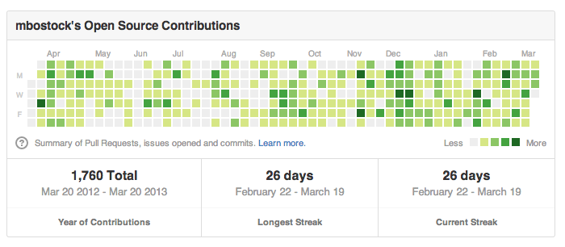
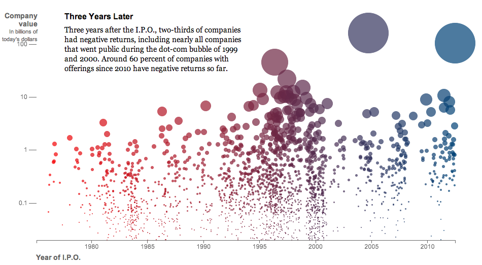
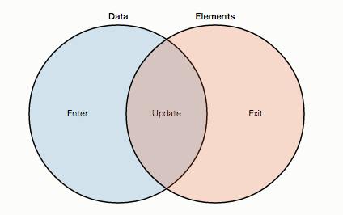

by Yosiya Hinosawa
スライドの URL: http://kt3k.github.com/d3intro/


(ライブラリとしての)
(雰囲気のみ)
css 互換セレクターで DOM を選択
d3.select('body').selectAll('div');上の式の返り値が Selection オブジェクト
Selection に対して data を bind する。
var data = [4, 3, 5, 6, 10, 14];
d3.select('body').selectAll('div')
.data(data); // selection に data を bind
data を使って Selection (DOM) を update する
data = [4, 3, 5, 6, 10, 14]
d3.select('body').selectAll('div')
.data(data)
.style('height', 20)
.style('width', (d) -> d * 10)
.attr('class', 'bar')
.style メソッドは css 属性
.attr メソッドはタグの属性を更新する。
属性の値に関数を入れた場合は、bind されたデータを引数としてその関数が呼ばれ、その返り値がセットされる。

Selection の dom の数と data の数が合わない場合どうなる？
data が余ってる分 = enter
dom が余ってる分 = exit
d3.select('body').selectAll('div').data([1..100])
.enter().append('div')
# data にあう分の div が生成される。
d3.select('body').selectAll('div').data([1..10])
.exit().remove()
# data にあわない分は .remove する。
dom と data の差分への操作がメソッドチェインだけで書ける。
存在しない DOM をわざと .selectAll して、.enter() に .append('elm') で、0 から dom を生成する使い方もある。
アニメーションの記述
.transition()にチェインさせた内容がアニメーションする。
(私見)
d3.layout
d3.geo
地図データを表示出来る。
TopoJSON という独自形式を使う。
(私見)
地図データ自体が結構ややこしい。
地雷感
Slides available at:
http://kt3k.github.com/d3intro/